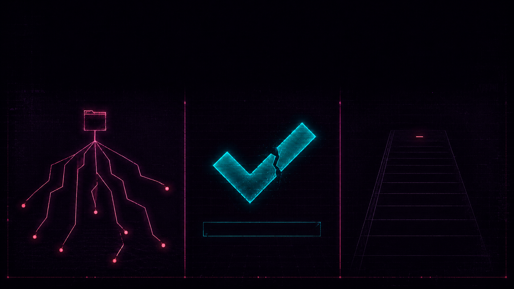

Хуки `pdlc-harness` и путь задачи от /sdd-new до PR.
Сначала смотрим, что ломается без обвязки. Потом — как 8 хуков превращают «модель пишет код» в проверяемый цикл от тикета до PR. Спойлер: магии нет, есть bash-скрипты.

Модель умеет писать код. Но без обвязки три вещи стабильно проваливаются: scope, «готово», след. Все три — реплицируемы, у каждого в команде. Если узнаёте — это нормально.
Просишь поправить utils.ts. Открываешь diff — тронуто восемь файлов в трёх модулях, тесты соседнего сервиса покраснели.
«по пути привёл к единому стилю»
Endpoint написан, один curl вернул 200, агент пишет «готово, тесты тоже добавил». Тесты, если они есть, мокают саму систему.
«у меня же зелёный билд» — «у тебя нет тестов»
Через неделю прод сломался. Кто принял решение убрать validation? Когда? Почему? — «ну, кажется, мы тогда что-то делали с idempotency».
«а это зачем?» — «подумал, что так лучше»
Это не вина модели. За границы, «готово» и след отвечает не модель — обвязка. Дальше — как именно.
После /init-project в репозитории появляется .claude/. Внутри — всё: настройки, агенты, команды, хуки, схемы, политика.
.claude/ ├── CLAUDE.md # guidance: стек, конвенции, R-классы ├── settings.json # permissions (allow/ask/deny) + hooks (matcher → script) ├── agents/ # 6 subagent-профилей с tool-scope ├── commands/ # 12 slash-команд (sdd-new, plan, test, ...) ├── hooks/ # 12 bash-скриптов (защита, аудит, evidence) ├── policies/ # risk-ladder.yaml — R0..R5 как policy-as-code ├── schemas/ # evidence-bundle.schema.json ├── templates/ # SDD-template.md, AGENTS.md.template ├── scripts/ # collect-evidence.sh, workflow-state.sh, ... ├── skills/ # verify-mcp-supply-chain (quarterly review) └── audit/ # YYYY-MM-DD.jsonl — append-only audit trail
Никакой «спрятанной магии». Всё это обычные файлы. .claude/ можно открыть, прочитать, править на ревью.
{
"permissions": {
"deny": [
"Bash(rm -rf*)",
"Bash(git push --force*)",
"Bash(sudo*)",
"Read(.env)", "Read(**/*.pem)",
"Read(**/credentials*)", "Read(**/.ssh/**)"
],
"ask": [
"Bash(git push*)",
"Bash(npm publish*)", "Bash(docker push*)",
"Bash(terraform apply*)", "Bash(kubectl apply*)",
"Write(.github/workflows/**)", "Write(migrations/**)"
],
"allow": [
"Read(**)", "Grep(**)", "Glob(**)",
"Bash(git status)", "Bash(git diff*)", "Bash(git log*)",
"Bash(npm test*)", "Bash(pytest*)", "Bash(go test*)"
]
}
}
Это «нулевая» защита: deny отрабатывает раньше любого хука, прямо на уровне permissions. Хуки дальше делают то, что glob не выразит — потому что «обещаю, что не уроню прод» — это не deny.
Хук — обычный bash-скрипт. Claude Code запускает его в строго определённой точке tool call, передаёт JSON на stdin и ждёт ответ. Решение хука — финально.
Модель видит только финальное решение и reason. Она не может «договориться» с хуком и не может его обойти изнутри своего контекста.
Поверх permissions.deny работает risk-aware хук. Чем выше класс задачи (R0..R5), тем шире список запретов.
#!/usr/bin/env bash INPUT=$(cat) COMMAND=$(echo "$INPUT" | jq -r '.tool_input.command // ""') RISK_CLASS=$(cat .claude/.cost/current-risk-class 2>/dev/null || echo "R1") # BASE: всегда блокируется, независимо от R-класса ALWAYS_DANGEROUS=( 'rm -rf /' 'rm -rf ~' 'rm -rf \*' 'git push.*--force' 'git reset --hard origin' 'mkfs\.' 'dd if=.*of=/dev/' 'curl.*\| *sh' ) # R3+ добавляет R3_DANGEROUS=( 'terraform apply' 'kubectl delete' ) for pattern in "${ALWAYS_DANGEROUS[@]}"; do if echo "$COMMAND" | grep -qE "$pattern"; then echo '{"decision":"block","reason":"destructive: '$pattern"}' >&2 exit 2 fi done exit 0 # allow по умолчанию
Перед каждым Write / Edit проверяется и путь, и содержимое. Хук блокирует и попытку записать в .env, и попытку засунуть AWS-ключ внутрь обычного файла.
INPUT=$(cat) FILE_PATH=$(echo "$INPUT" | jq -r '.tool_input.file_path // ""') CONTENT=$(echo "$INPUT" | jq -r '.tool_input.content // .tool_input.new_string // ""') # 1. Защищённые пути (нельзя писать вообще) PROTECTED_PATHS=( '\.env$' '\.env\.' '/credentials' '\.pem$' '\.key$' ) # 2. Сигнатуры секретов в содержимом SECRET_PATTERNS=( 'AKIA[0-9A-Z]{16}' # AWS Access Key 'sk-[a-zA-Z0-9]{40,}' # OpenAI / Anthropic '-----BEGIN (RSA |OPENSSH )?PRIVATE KEY-----' # PEM 'ghp_[a-zA-Z0-9]{36}' # GitHub PAT 'xox[baprs]-[0-9a-zA-Z-]{10,}' # Slack tokens ) for p in "${PROTECTED_PATHS[@]}"; do if echo "$FILE_PATH" | grep -qE "$p"; then echo '{"decision":"block","reason":"protected path"}' >&2; exit 2 fi done
Append-only JSONL: одна строка на событие, ротация по дате. Этот же журнал — источник правды для /continue и для расчёта /metrics.
{
"timestamp": "2026-05-27T11:42:08.412Z",
"event": "PostToolUse",
"agent": "coding",
"tool": "Edit",
"decision": "allow",
"risk_class": "R3",
"task_id": "idempotency-key",
"phase": "implement",
"diff_summary_hash": "sha256:7b4a9c…",
"test_status": "pending",
"file": "src/middleware/idempotency.ts"
}
Объём полей зависит от audit_depth текущего класса. R0 пишет минимум. R3+ добавляет diff_summary_hash и security_verdict.
Когда модель пытается сказать «готово», срабатывает Stop-хук. Он валидирует .claude/evidence-bundle.json по JSON-схеме. Не сошлось — задача остаётся in_progress. Stop-hook на слово не верит — даже если очень мило попросить.
BUNDLE_PATH="${EVIDENCE_BUNDLE_PATH:-.claude/evidence-bundle.json}" SCHEMA_PATH="${EVIDENCE_SCHEMA_PATH:-.claude/schemas/evidence-bundle.schema.json}" # Step 0: chat-only session без diff — bundle не требуем if [[ -z "$(git diff --cached --name-only)$(git diff --name-only)" ]]; then echo "no changes — skipping bundle requirement" >&2; exit 0 fi # Step 1: файл существует? [[ -f "$BUNDLE_PATH" ]] || emit_block "Bundle not found. Run /evidence." # Step 2: валидируем по schema (ajv → python-jsonschema → jq smoke) if command -v npx >/dev/null; then npx -y ajv-cli validate -s "$SCHEMA_PATH" -d "$BUNDLE_PATH" --spec=draft2020 \ || emit_block "Bundle schema validation failed" elif command -v python3 >/dev/null; then python3 -c "import json, jsonschema; ..." \ || emit_block "Bundle schema validation failed" fi # R3+: если валидатор недоступен — block (нельзя доверять отсутствию проверки) exit 0
Двенадцать bash-скриптов, у которых нет рабочего настроения. Пятница вечером работают так же, как в понедельник утром.
rm -rf, push --force, mkfs, dd, curl|sh. Risk-aware: R3+ блокирует terraform apply, kubectl delete
Дневной токен-лимит по risk class. ≥80% — warning, превышен — block
Защищённые пути (.env, .pem) + сигнатуры секретов в content (AWS, GH PAT, Slack token, PEM)
Coding не правит тесты без явного opt-in. Тесты редактирует только Test-агент
Блокирует tool call с признаками prompt injection (jailbreak в аргументах)
Supply chain контекста: MCP, hooks, skills. Проверка целостности перед каждой сессией
Append-only JSONL audit trail. Поля зависят от risk class
Lint + typecheck до коммита. Hallucinated imports, deprecated APIs
Дочерний агент не получил прав больше, чем у родителя. Блок эскалации
Без bundle нет «готово». Валидирует по JSON-схеме при попытке завершения
Warning, если в CLAUDE.md остались незаполненные <placeholders>
Валидация frontmatter в .claude/commands/*.md
Вы видели 12 хуков в каталоге. Сейчас увидите, как 8 из них срабатывают в живой задаче R3. Они не «дежурят на всякий случай» — каждый знает свою фазу и ловит свой класс ошибок.
Хук, который не сработал — это не лишний хук. Это страховка, у которой сегодня не было повода. Дальше — смотрим, что они делают в живом цикле.
Сценарий: добавить X-Idempotency-Key в платёжный API. Чтобы повторный POST с тем же ключом не создавал второй платёж.
Запускается один раз в новом репозитории. Команда копирует .claude/, прогоняет smoke-тест хуков, регистрирует CLAUDE.md. После этого слаш-команды доступны.
$ claude > /init-project ✓ .claude/ создан (12 hooks, 6 agents, 12 commands) ✓ settings.json подключён (permissions + hooks) ✓ CLAUDE.md создан — заполните <stack>, <critical_domains> ✓ .claude/hooks/test-hooks.sh — regression suite зелёный ✓ registered slash commands: /sdd-new /plan /test ... /evidence Next: заполнить CLAUDE.md и запустить /sdd-new <your task>
В CLAUDE.md останутся placeholder'ы <stack>, <critical_domains>. SessionStart-хук предупредит, если их не заполнить — модель будет работать на дефолтах вместо ваших правил.
Команда создаёт SDD из шаблона и задаёт вопросы, которые агент не решает сам.
> /sdd-new idempotency-key для POST /v1/payments → docs/sdd/20260527-idempotency-key.md (status: draft) → вопросы человеку: · class риска? (черновик предлагает R3 — платежи, prod) · acceptance criteria (Given-When-Then)? · сколько живёт ключ? (предлагается 24h) · что возвращать при конфликте payload? · кто SME-ревьюер? (security обязателен на R3) blocked: /plan, /test, /implement до approved
Пока в frontmatter SDD не стоит status: approved и не проставлен risk_class, остальные команды отказываются работать. Это slash-command-lint.sh.
Класс не «ощущается». Считается по data × stage × radius × reversibility.
> /risk-classify idempotency-key axis 1 — data: PII (payment payload, idempotency tokens) axis 2 — stage: prod axis 3 — blast radius: single-service (payments API) axis 4 — reversibility: partial (refund возможен, но инцидент) → R3 Следствия для R3: · security агент вызывается обязательно (не опционально) · audit_depth = jsonl_full_with_security · Coding работает в worktree (по умолчанию) · evidence_bundle.security_verdict стал required-полем · /squash перед PR — обязательный шаг
Read-only агент проходит по коду и SDD. Edit / Write / Bash недоступны.
## Plan: idempotency-key · SDD: docs/sdd/20260527-idempotency-key.md · R3 ### Files touched + src/middleware/idempotency.ts // новый + src/server.ts // wire middleware + src/storage/redis-keys.ts // helpers для TTL + tests/payment/idempotency.test.ts // failing tests ### Steps 1. [Test] падающие тесты AC-1..AC-5 2. [Impl] middleware с Redis storage + TTL 24h 3. [Verify] полный test suite, integration с payments-emulator 4. [Review] /review + /security (R3) ### Risks · Redis недоступен → fail-open или fail-closed? → закрываем явно в SDD · TTL collision при clock skew → tests/<edge-case> · payload conflict response code → 422 (из SDD)
Test-агент пишет тесты до реализации. Все красные — это план «куда нужно прийти».
describe('X-Idempotency-Key', () => { it('двойной POST с тем же ключом не создаёт второй платёж', async () => { const r1 = await post('/v1/payments', payload, { 'X-Idempotency-Key': K }); const r2 = await post('/v1/payments', payload, { 'X-Idempotency-Key': K }); expect(r2.body.id).toBe(r1.body.id); expect(await countPayments()).toBe(1); }); it('конфликт payload при том же ключе → 422', ...); it('TTL ключа 24 часа', ...); it('Redis недоступен → fail-closed (503)', ...); });
$ npm test ✕ двойной POST с тем же ключом не создаёт второй платёж ✕ конфликт payload при том же ключе → 422 ✕ TTL ключа 24 часа ✕ Redis недоступен → fail-closed (503) Tests: 4 failed, 0 passed ← это и есть контракт
Coding-агент работает в .worktrees/idempotency-key/, на ветке agent/idempotency-key. Тестовый файл не трогает (защищает test-files-protector.sh).
$ scripts/agentic-worktree.sh start idempotency-key ✓ .worktrees/idempotency-key on agent/idempotency-key (from HEAD) $ cd .worktrees/idempotency-key && claude /implement [Coding agent] создаю src/middleware/idempotency.ts ... [Coding agent] обновляю src/server.ts ... [Coding agent] прогоняю tests ... ✓ Tests: 4 passed, 0 failed ✓ Lint: clean ✓ Typecheck: clean → переход к /review # попытка агента трогать tests/ → {"decision": "block", "reason": "test files are owned by Test agent"}
Review-агент без прав на запись. На R3+ автоматически дёргается security-агент (без явного запроса).
[REVIEW] соответствие SDD: ✓ AC-1..AC-4 покрыты тестами ✓ negative case «Redis down» закрыт fail-closed (как в SDD) ✓ нет реализации вне scope [REVIEW] качество: major: idempotency key не редактируется (read-only после первого POST), но в middleware нет explicit log на конфликт payload — в инцидентах трудно будет восстановить причину 422 [SECURITY] R3 mandatory scan: ✓ idempotency key не попадает в логи (sanitised) ✓ Redis-key namespace: tenant_id + sha256(key) — нет cross-tenant collision ✓ tampering: подмена payload при том же ключе → 422 (тест есть) blocker: X-Idempotency-Key читается до auth middleware → potentially DoS вектор. Перенести после auth.
Blocker возвращает задачу в Implement. Major добавляет лог конфликта, фиксится в том же коммите.
Финальный JSON. Если не валиден — stop-hook не отпускает.
{
"schema_version": "3.5.0",
"task_id": "idempotency-key",
"risk_class": "R3",
"sdd_reference": "docs/sdd/20260527-idempotency-key.md",
"acceptance_criteria_status": [
{ "id": "AC-1", "status": "pass" },
{ "id": "AC-2", "status": "pass" }, ...
],
"diff_summary": { "files": 4, "added": 187, "removed": 12 },
"tests": { "passed": 42, "failed": 0, "skipped": 0 },
"security_verdict": { "high": 0, "critical": 0, "reviewed_by": "security-agent" },
"assumptions": [
"Redis SLA: 99.9% — fail-closed acceptable per security team"
],
"completed_at": "2026-05-27T14:08:21Z"
}
Атомарные правки агента squash-ятся в один коммит с message, выведенным из SDD + evidence.
$ /squash idempotency-key → 14 commits squashed into 1 → commit message: feat(payments): X-Idempotency-Key support (R3) SDD: docs/sdd/20260527-idempotency-key.md AC: 5/5 pass · tests: 42/42 · security: clean $ git push origin agent/idempotency-key # ask-hook → confirm $ gh pr create --title "feat(payments): idempotency-key (R3)" \ --body "$(cat <<'EOF' ## Summary Implements RFC-style X-Idempotency-Key for POST /v1/payments. SDD: docs/sdd/20260527-idempotency-key.md Evidence: .claude/evidence-bundle.json ## Tests - Tests: 42 passed - Security: 0 high / 0 critical EOF )" → PR #247 opened · awaiting human review & merge
Те самые три провала из второго слайда — закрыты. Не верой, а скриптами, у которых нет настроения.
Завтра утром: открой репо, набери первую команду. Дальше обвязка занудно проверяет всё за тебя. Это и есть план.